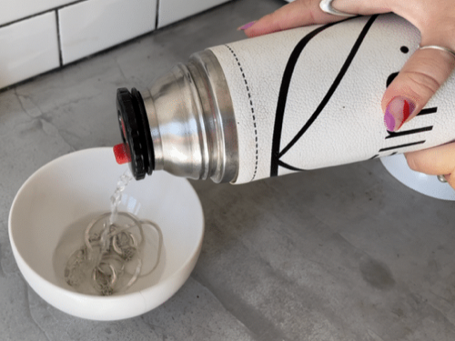
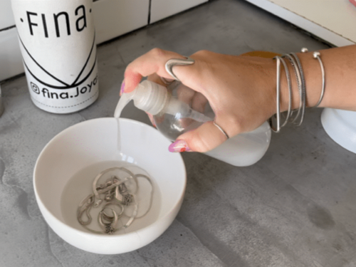
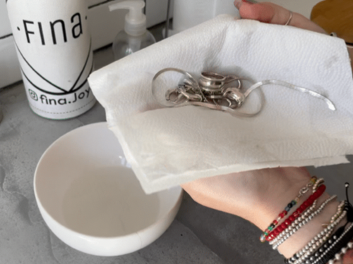
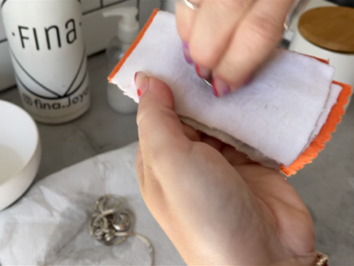

Cuidados de nuestros productos de Plata y Oro.
Si el cambio de color es leve todavía, se puede usar un método casero y simple.
Poné agua caliente y un poquito de detergente en un recipiente. Una vez disuelto el detergente, introducís las joyas y lo dejas actuar unos minutos.
 
Retiras las joyas y las secas con un paño de papel absorbente, para terminar frotalas con un trapo de tela suave o con nuestro Paño de Limpieza para recuperar el brillo original de tus joyas.
 
Es importante tener cuidado si la pieza tiene piedras porque se pueden salir o rayar. Cuando la joya está muy negra en taller se puede pulir y lustrar la plata para quitar la capa oscura y dejar la pieza como cuando la joya está muy negra en taller se puede pulir y lustrar la plata para quitar la capa oscura y dejar la pieza como nueva.
Cuando la joya está muy negra en taller se puede pulir y lustrar la plata para quitar la capa oscura y dejar la pieza como nueva.
LEE TODA LA INFORMACIÓN ANTES DE REALIZAR TU COMPRA
La información sobre materiales, cuidados y recomendaciones está en la web y en las historias destacadas de Instagram y puede ser brindada por los vendedores en los locales de ser solicitada. El incumplimiento de éstas instrucciones, o recomendaciones puede constituir un mal o indebido uso del producto perdiendo todo tipo de garantía.
Para más información visita esta sección de Preguntas Frecuentes.